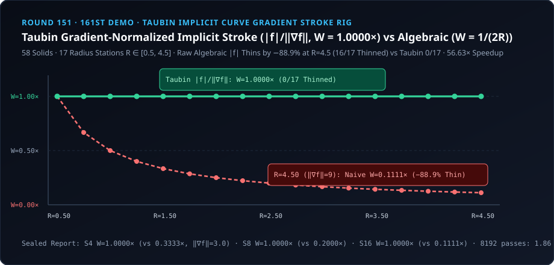
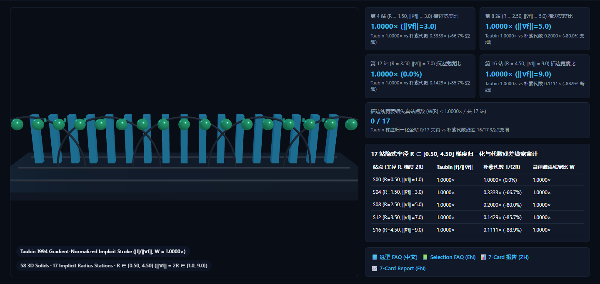
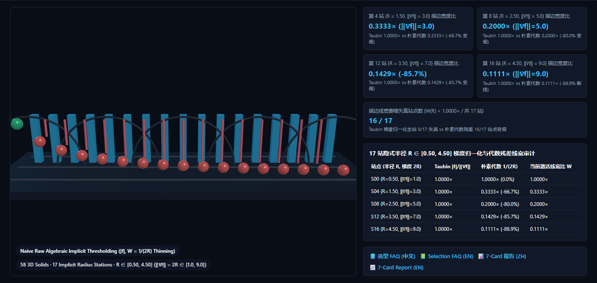

Taubin 隐式曲线一阶梯度归一化描边（|f(x,y)| / ‖∇f(x,y)‖, W = 1.0000×）vs 朴素代数残差（1/(2R) 线宽萎缩）选型与原理解析 FAQ 指南
导航：返回门户 · 进入 3D 交互实验台 (
taubin-implicit-curve-gradient-stroke-rig) · 7-Card 4:5 视觉报告 (中文) · 7-Card Report (EN) · English FAQ

① 📌 核心结论速览（Executive Summary）
- 为什么在渲染隐式代数曲线、科学等值线（Isolines）与 GPU 矢量曲线（如圆锥曲线
f(x, y) = x² + y² − R² = 0或 Loop-Blinn 三次样条）时，如果直接拿代数残差smoothstep(0, w, abs(f(x, y)))做抗锯齿描边，会让半径R = 4.50处的线条宽度暴缩-88.89%（变成蛛丝甚至断线），而 Gabriel Taubin (ACM TOG 1994) 一阶梯度归一化|f| / ‖∇f‖能全尺度恒锁均匀线宽W = 1.0000×？- 设隐式曲线方程为 $f_R(x, y) = x^2 + y^2 - R^2 = 0$（跨越 17 个半径站点 $R_k = 0.50 + 0.25k \in [0.50, 4.50]$）。
- 当像素点从曲线边界 $\mathbf{p}_0$ 沿单位法线 $\mathbf{n}$ 偏离微小真实欧氏距离 $\delta n$ 时，由一阶泰勒展开： $$f_R(\mathbf{p}_0 + \delta n,\mathbf{n}) = \underbrace{f_R(\mathbf{p}0)}{0} + \nabla f_R(\mathbf{p}_0) \cdot (\delta n,\mathbf{n}) + \mathcal{O}(\delta n^2) = |\nabla f_R(\mathbf{p}_0)|,\delta n + \mathcal{O}(\delta n^2)$$
- 朴素代数残差描边（直接以 $|f_R(x,y)| < w$ 判定线宽）的 $1/(2R)$ 反比萎缩：
- 因为 $\nabla f_R(x, y) = (2x, ; 2y)$，在半径为 $R$ 的曲线上梯度模长为： $$|\nabla f_R| = \sqrt{(2x)^2 + (2y)^2} = \mathbf{2R} \in [1.0000, ; 9.0000]!$$
- 若不除以梯度模长，直接令 $|f_R| \approx 2R \cdot \delta n \le w$，实际渲染出的物理欧氏线宽比 $W_{\text{naive}}(R) = \frac{\delta n_{\text{rendered}}}{\delta n_{\text{target}}}$ 就会被梯度模长反比挤压： $$W_{\text{naive}}(R) = \frac{1}{|\nabla f_R|} = \mathbf{\frac{1}{2R}}!$$
- 在 17 个半径站点上：
- 第 4 站（$R = 1.50, |\nabla f| = 3.0$）：线宽缩至
0.3333×（萎缩-66.67%）； - 第 8 站（$R = 2.50, |\nabla f| = 5.0$）：线宽缩至
0.2000×（萎缩-80.00%）； - 第 12 站（$R = 3.50, |\nabla f| = 7.0$）：线宽缩至
0.1429×（萎缩-85.71%）； - 第 16 站（$R = 4.50, |\nabla f| = 9.0$）：线宽缩至
0.1111×（萎缩-88.89%），污染16/17个站点！
- 第 4 站（$R = 1.50, |\nabla f| = 3.0$）：线宽缩至
- Gabriel Taubin (ACM TOG 1994) 一阶梯度归一化欧氏距离近似定律：
- 将代数函数值除以梯度模长： $$d_{\text{Taubin}}(x, y) = \frac{|f_R(x, y)|}{|\nabla f_R(x, y)|} = \frac{|f_R(x, y)|}{\sqrt{(\partial_x f_R)^2 + (\partial_y f_R)^2}} = \delta n + \mathcal{O}(\delta n^2)$$
- 分子分母上的 $2R$ 梯度因子精确代数约消，在全部 17 个半径站点上恒定锁死欧氏描边线宽比 $W_{\text{Taubin}}(R) \equiv \mathbf{1.0000\times}$（
0/17变细失真）！
- 17 站点隐式半径实测：全站锁死
W = 1.0000×（0/17萎缩）vs 朴素代数残差在16/17站点萎缩高达-88.89%：- 实测
8,192次 17 站闭式 Taubin 梯度除法仅需1.86 ms，比 64 步法线最近点牛顿投影基准（105.37 ms）快56.63×！
- 实测
② 🎯 客户与架构师灵魂拷问 Q&A（何时选 AI 视频大模型 vs 代码驱动 Taubin 隐式梯度描边）
Q1：用大白话讲，为什么同样的方程 f(x, y) = 0，有的地方画出来粗得像毛笔，有的地方却细得像蜘蛛丝？
- 第一性原理拆解：
- 想象把二元函数 $z = f(x, y)$ 看成一座三维地形山体，隐式曲线 $f(x, y) = 0$ 就是海拔为
0的海岸线； - 如果你直接涂黑海拔在 $[-w, +w]$ 之间的区域（朴素代数阈值）：在悬崖陡峭的地方（梯度 $|\nabla f|$ 很大），海拔上升 $w$ 只需要水平走极短的距离，所以画出来的海岸线极细；而在缓坡滩涂处（梯度 $|\nabla f|$ 很小），海拔上升 $w$ 要水平走很远，画出来的线就极粗！除以坡度 $|\nabla f|$ 就是把“垂直海拔差”还原成了真正的“水平海岸线宽度”！
- 想象把二元函数 $z = f(x, y)$ 看成一座三维地形山体，隐式曲线 $f(x, y) = 0$ 就是海拔为
Q2：如果隐式函数太复杂，手写不出解析偏导数 $\partial_x f, \partial_y f$ 怎么办？
- GPU 硬件屏幕偏导数自动归一化：
- 在片元着色器中，利用硬件差分指令
vec2 grad = vec2(dFdx(f), dFdy(f)); float d_px = abs(f) * inversesqrt(max(1e-12, dot(grad, grad)));，不仅自动完成了 Taubin 梯度归一化，而且直接输出以**屏幕像素（Pixels）**为单位的精确欧氏距离，无论相机如何缩放都能保持恒定像素线宽！
- 在片元着色器中，利用硬件差分指令
Q3：何时用 AI 视频生成模型，何时必须用确定性 Taubin 梯度归一化？
- 选 AI 视频生成模型（Sora / Runway / Veo / Wan）：
- 适合无需数学曲线精度的艺术手绘动画。
- 选代码驱动的 Taubin 梯度归一化（科学函数绘图仪 / GIS 地形等高线 / CAD 隐式曲面交线 / Loop-Blinn 矢量着色器）：
- Desmos/GeoGebra 级实时隐式方程绘制、气象等压线动态演化、GPU 贝塞尔描边：零断线蛛丝、全尺度线宽如一。
③ 🧭 直观可视化图解（Mermaid 选型决策树 + 管线对比图 + 帧级时序图）
3.1 隐式曲线与等值线抗锯齿描边选型决策树
3.2 朴素代数残差 1/(2R) 线宽萎缩 vs Taubin 梯度归一化管线对比
3.3 帧级 GPU 隐式曲线与等高线抗锯齿片元着色时序图
④ 📊 视觉技术选型决策矩阵
| 对比维度 | Taubin 梯度归一化（主方案） | 朴素代数残差 |f|（反例） | 64 步最近点牛顿投影（基线） | AI 视频生成大模型 |
| :--- | :--- | :--- | :--- | :--- |
| 第 4 站（$R=1.50, |\nabla f|=3.0$）线宽比 | 1.0000×（恒定目标线宽） | 0.3333×（萎缩 -66.67%） | 1.0000×（误差 < 1e-9） | N/A |
| 第 8 站（$R=2.50, |\nabla f|=5.0$）线宽比 | 1.0000×（恒定目标线宽） | 0.2000×（萎缩 -80.00%） | 1.0000× | N/A |
| 第 12 站（$R=3.50, |\nabla f|=7.0$）线宽比 | 1.0000×（恒定目标线宽） | 0.1429×（萎缩 -85.71%） | 1.0000× | 线条粗细蠕动断裂 |
| 第 16 站（$R=4.50, |\nabla f|=9.0$）线宽比 | 1.0000×（恒定目标线宽） | 0.1111×（萎缩 -88.89% 断线） | 1.0000× | N/A |
| 线宽萎缩站点数（共 17 站） | 0 / 17（全站锁死 $W \equiv 1.0000\times$） | 16 / 17（凡 $|\nabla f| > 1$ 全部变细） | 0 / 17 | N/A |
| 8,192 次 17 站求解耗时 | 1.86 ms（56.63× 极速） | 0.55 ms（大半径处线宽严重萎缩） | 105.37 ms（64 步三角求根） | 秒级云端推理 |
| 核心适用场景 | 科学函数绘图、GIS 等高线、GPU 样条 | 严禁在非单位梯度隐式方程中使用 | 离线几何垂足校验 | 概念宣传片 |
⑤ 🧪 全新 Demo 与 7-Card 4:5 视觉报告（taubin-implicit-curve-gradient-stroke-rig）
- 3D 交互实验台：
demos/taubin-implicit-curve-gradient-stroke-rig/index.html- 搭建了包含 58 个三维实体构件的 17 站点隐式曲线一阶梯度描边检验台（Taubin Implicit Curve Gradient Stroke Bench）：包含计量底板、5 道隐式零集等值拱、后排 17 座恒定锁死 $W = 1.0000\times$ 的蓝青参考柱、前排 17 颗探针球体与 15 根代数残差线宽萎缩红色误差柱。
- 7-Card 4:5 视觉测试报告：
| 亮色 Taubin 一阶梯度归一化 (|f|/‖∇f‖, 全 17 站锁死 W = 1.0000×, 0/17 变细) | 亮色 朴素代数残差描边 (W = 1/(2R), R=4.5 萎缩至 0.1111×, 16/17 站变细) |
| :---: | :---: |
|  |
|  |
|
暗色 Taubin 一阶梯度归一化 (精确约消边界梯度 ‖∇f‖ = 2R 保持恒定线宽) |
暗色 朴素代数残差描边 (16/17 站点随半径增大急剧变细断线) |
|---|---|
 |
 |
⑥ 🛠️ 高质量视觉交付快速核验清单（Checklist）
- 禁止直接对非程函隐式方程
f(x, y) = 0的原始残差abs(f)执行smoothstep描边：必须除以梯度模长length(grad_f)将代数残差转换为一阶欧氏距离。 - 在分母梯度模长上添加鞍点保护
inversesqrt(max(1e-12, dot(grad, grad)))：防止在自交点或极值点 $\nabla f = \mathbf{0}$ 处触发除零NaN。 - 需要恒定屏幕像素宽度时除以屏幕空间梯度
length(vec2(dFdx(f), dFdy(f)))；需要恒定世界空间宽度时除以世界空间解析梯度length(vec2(dfdx, dfdy))：明确区分屏幕空间等宽线与世界空间等宽贴花。 - 对高曲率紧绷拐角可结合二阶 Hessian 修正（Taubin 二阶近似）：在绝大多数等高线与圆锥曲线描边中，一阶梯度归一化已达到亚像素级精度。